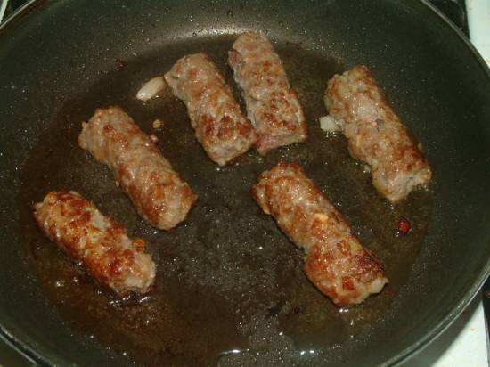

Het is een variatie van de Arabische kebab, maar heeft het een smaak van het Balkan. Het wordt traditioneel gemaakt in het Zuid-oosten van Europa, in landen zoals Bosnie. Ook wordt het gemaakt in Italie.
Het wordt geserveerd op een broodje met uiringen. Traditioneel eten ze het met 3 verschillende sauzen.
Ingredienten:
Olijfolie voor Grillen
bereidingswijze:
Meng alle ingredienten door gehakt.
Maak er worstjes van, zo een vinger lengte lang en 1 cm in doorsnee.
Smeer worstjes in met olijfolie en grilleer op grilleer plaat of gedurende de zomers natuurlijk op de bbq.
Als je het zelf ook eens een keer wilt maken, klik dan de link hier